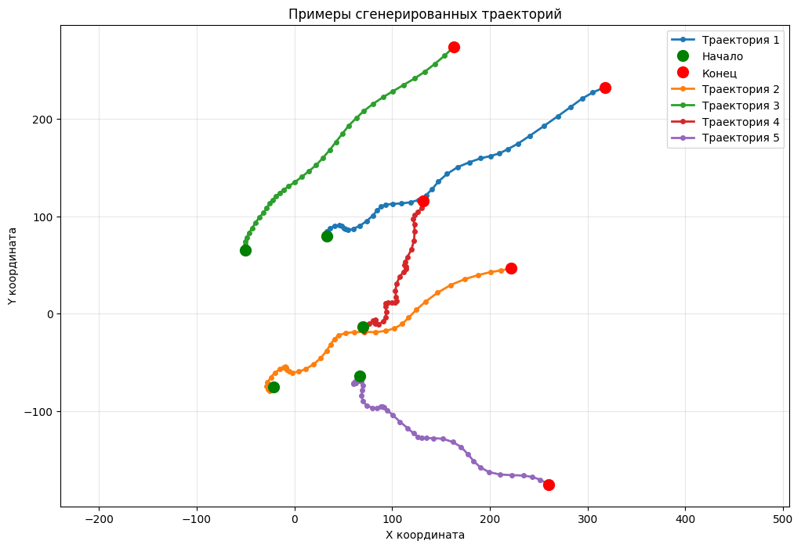

Введение
Прогнозирование траектории движения объектов в двумерном пространстве является одной из ключевых задач в таких областях, как автономная навигация, робототехника, системы видеонаблюдения, а также отслеживание целей в оборонных и аэрокосмических приложениях [1]. Точное предсказание будущего положения цели на основе ограниченных начальных данных позволяет повысить эффективность управления, планирования и принятия решений в реальном времени.
Традиционные методы прогнозирования, основанные на физических моделях и фильтрах (таких как фильтр Калмана), часто оказываются недостаточно гибкими в условиях нелинейного и стохастического характера движения, а также при наличии шумов в данных. В связи с этим всё более востребованными становятся подходы, основанные на методах машинного обучения, и в частности - на рекуррентных нейронных сетях (RNN) [2]. RNN обладают архитектурой, позволяющей эффективно обрабатывать последовательные данные, выявлять временные зависимости и долгосрочные закономерности, что делает их особенно подходящими для задач прогнозирования траекторий.
В данной работе рассматриваются и сравниваются два метода прогнозирования траектории фиксированной цели в двумерном пространстве, основанные на использовании рекуррентных нейронных сетей: долгая краткосрочная память (LSTM) [3] и управляемый рекуррентный блок (GRU) [5]. Основное внимание уделяется принципам функционирования этих методов, их архитектуре и процессу обучения. Целью исследования является оценка эффективности и точности предложенных подходов на основе тестовых данных, а также выявление их сравнительных преимуществ и ограничений.
Практическая значимость работы заключается в разработке инструментария, способного повысить надёжность и точность систем слежения и прогнозирования в условиях неполной или зашумлённой информации о начальной траектории движения объекта.
